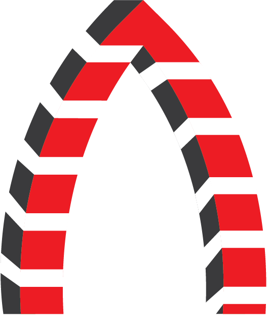

Some Notable Businesses that started in the Guildhall.
| Name | Information |
|---|---|
| Crafters Cwtch | Crafters Cwtch is one of the first arts and crafts shops and gallery in Cardigan which can be found on the high street. |
| Cardigan Bay Brownies | Cardigan Bay Brownies is a bakery on the high street in Cardigan founded by Nerys Evans. |
| Crwst | Crwst is a bakery in Cardigan owned by Catrin and Osian Jones. It started off in the market before eventually setting up their own store. |
| U Melt Me | U Melt Me is a furniture, home accessory and giftshop on the high street in Cardigan opened in 2020. |
| Toby Stitches | Toby Stiches is a business thats been running for over 50 years selling materials for crafts as wel as selling what they've made. With the business seeing success while staying in the Guildhall. |